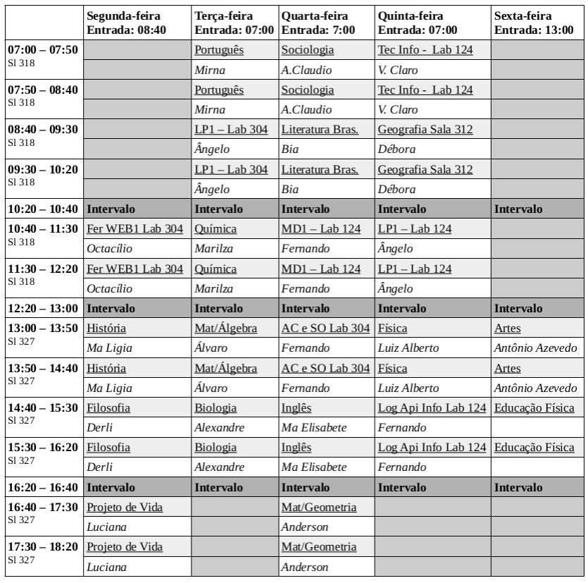

Site de referências da turma 1106
Importante: Comprar atlas de geografia até 05/05
Provas
Nenhuma até o momento
Avaliações / Testes
Março
Biologia - Dia 22/03/2022Literatura Brasileira - Dia 23/03/2022
Trabalhos
Março
Química - Exercícios em aula valendo ponto - Aparentmente dia 22/03/2022Matemática - Resolução completa em papel almaço - 23/03/2022Tec Info - Responder questionário - 24/03/2022
- Filosofia - Trabalho para Apresentar - 28/03/2022
- Tec Info - Responder questionário (VALENDO DOIS PONTOS!) - 31/03/2022
Deveres de casa
Março
Inglês - 23/03/2022Geografia - Ler cap. 2 - 24/03/2022
Quadro de Horários
